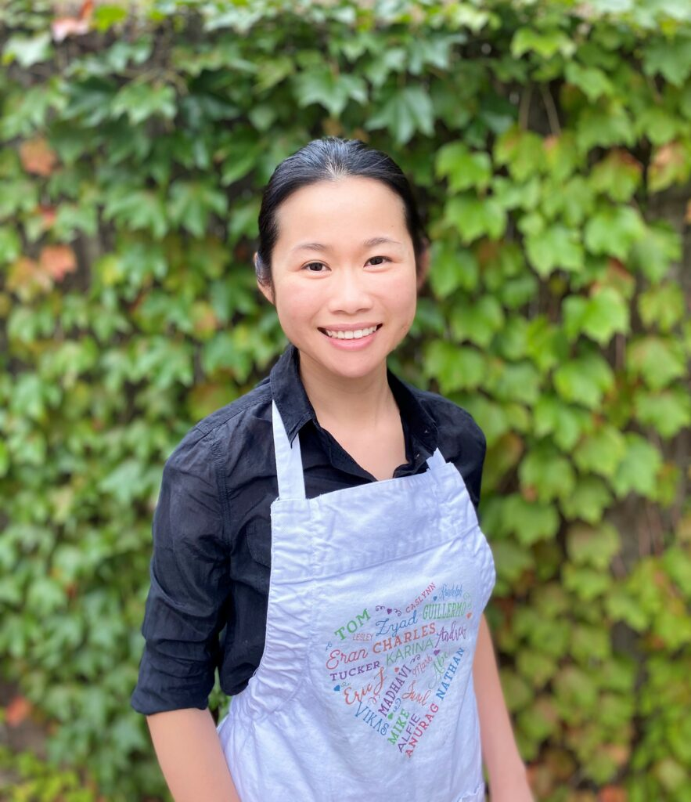

Meet Our Baker
About Us

Beginnings
Growing up in Malaysia, Jessey never used an oven and did not know how to bake anything. Many homes did not even include an oven, to avoid adding extra heat to the tropical climate. As a result, Jessey did not start baking until she discovered an oven in her apartment during a college internship. Her first creation? Homemade chocolate chip cookies that used sweet potatoes from a coworker’s farm.
Inspiration
From then on, Jessey began seeking out every opportunity she could to bake for others: friends’ and coworkers’ birthdays, anniversaries, baby showers, and any other occasion you could think of. She enjoyed finding out what the celebrated person likes and designing a dessert specifically for him/her. Jessey incorporated flavor preferences, and she accounted for dietary preferences and restrictions like making a healthier dessert. Even after a full day of work, she would bake into the late hours of night. Jessey relished every moment of it because it allowed her to bring joy to others, hear their stories, and share in their special occasions.
Training
Jessey learned much of what she does in the kitchen through online resources, friends, and lots of practice. She also spent a year working for Keegan Kreations, a French bakery. There she learned the finer details of crafting beautiful and tasty baked goods, as well as the operations of a small business. Jessey has also taken courses at the Cambridge School of Culinary Arts (CSCA) to further sharpen her techniques. She continues to look for ways to improve her skills.
Founding
After years of working as an engineer and a data science manager, Jessey realized that her desire to bake for others overshadowed her desire to work in corporate America. So with encouragement from family, friends, and coworkers, Jessey started her own bakery, Whiskful, in September 2019, offering specialty cakes and desserts. Customers inspire Jessey’s creations, and she looks forward to baking for you!
I'm currently taking a break to focus on my family. I'd love to keep in touch while the kitchen is on pause.
Join the email list →